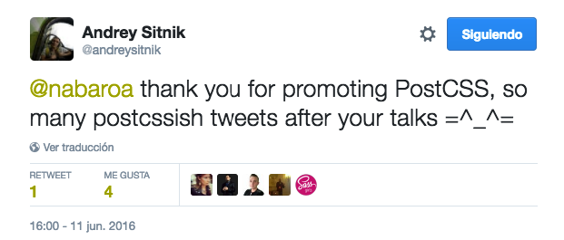
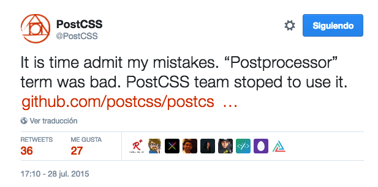

What is PostCSS?
Author
Andrey Sitnik @andreysitnik
Someone asked Andrey: why did you create PostCSS?
“because TJ Holowaychuk did not want to improve Rework API”

A tool for transforming CSS with JavaScript
Based on plugins
Build you own environment
Currently, PostCSS has more than 200 plugins
PostCSS it is NOT
- a prepocessor
- a postprocessor
- the future sintax
- a cleaning tool
Admitting naming mistakes
Origin
Autoprefixer
- The first, the best known and most widely used plugin
It is recommended by Google and used in Twitter.
Current status
npm-stat.com
Total number of downloads last year,
between Oct 12 2015 and Oct 12 2016: 28.690.707
Benefits
- Regular CSS
- Versatility
- Modularity
- Speed
- DIY
- Used in common dev. enviroments
- Community
Regular CSS
- Back to the roots & the specification
- It does not require a specific syntax
- It does not block the code (Sass, Less)
- It is not necesary to translate the code to other languages
Versatility
Currently, PostCSS has
more than 200 plugins
If you can imagin, you can do it
Modularity
Use only what you need
Each plugin for each task
*But there are also plugin packages
Speed
It's 3 times faster
PostCSS Benchmarks: Preprocessors
Compare CSS processors for parsings, nested rules, mixins, variables and math:
PostCSS: 39 ms
Rework: 73 ms (1.9 times slower)
libsass: 77 ms (1.9 times slower)
Less: 179 ms (4.5 times slower)
Stylus: 269 ms (6.8 times slower)
Stylecow: 271 ms (6.9 times slower)
Ruby Sass: 1101 ms (28.0 times slower)
DIY
You don’t need special permission to make a PostCSS plugin; if you want to make one,
you just go right ahead and make it.
Community
♡ Open source
Instalation
Used in common dev. enviroments
- Gulp
- Grunt
- npm
- Codepen
- Prepros
Install postCSS
npm install gulp-postcss --save-dev Install the selected plugins
npm install postcss-import --save-dev
npm install postcss-custom-properties --save-dev
npm install postcss-nested --save-dev
npm install postcss-mixins --save-dev
...
gulpfile.com
var gulp = require('gulp'),
postcss = require('gulp-postcss'),
import = require('postcss-import'),
customproperties = require('postcss-custom-properties'),
mixins = require('postcss-mixins'),
nested = require('postcss-nested');
gulp.task('css', function() {
var processors = [
import,
cssnext,
mixins,
nested
];
return gulp.src('./src/*.css')
.pipe(postcss(processors))
.pipe(gulp.dest('./dest'));
});
gulp.task('watch', function() {
gulp.watch('src/**/*.css', ['css']);
});
Great Plugins for awesome features
Future CSS ?
Autoprefixer
Add vendor prefixes to CSS rules using values from Can I Use.
:fullscreen a {
display: flex
}
:-webkit-full-screen a {
display: -webkit-box;
display: flex
}
:-moz-full-screen a {
display: flex
}
:-ms-fullscreen a {
display: -ms-flexbox;
display: flex
}
:fullscreen a {
display: -webkit-box;
display: -ms-flexbox;
display: flex
}
Custom properties
Syntax
:root{
--color:#f2b806;
}
.foo{
color:var(--color);
}
Can I use?
But we can use the syntax today
postcss-custom-properties
/*Using this input.css:*/
:root {
--color: pink;
}
div {
color: var(--color);
}
/*you will get:*/
div {
color: pink;
}
@import
postcss-import
PostCSS plugin to inline @import rules content
@import "helpers/var.css";
Nesting
Nested
PostCSS plugin to unwrap nested rules like how Sass does it.
.phone {
&_title {
width: 500px;
@media (max-width: 500px) {
width: auto;
}
body.is_dark & {
color: white;
}
}
img {
display: block;
}
}
.phone_title {
width: 500px;
}
@media (max-width: 500px) {
.phone_title {
width: auto;
}
}
body.is_dark .phone_title {
color: white;
}
.phone img {
display: block;
}
postcss-mixins
PostCSS plugin for mixins
@define-mixin icon $network, $color: blue {
.icon.is-$(network) {
color: $color;
@mixin-content;
}
.icon.is-$(network):hover {
color: white;
background: $color;
}
}
@mixin icon twitter {
background: url(twt.png);
}
@mixin icon youtube, red {
background: url(youtube.png);
}
.icon.is-twitter {
color: blue;
background: url(twt.png);
}
.icon.is-twitter:hover {
color: white;
background: blue;
}
.icon.is-youtube {
color: red;
background: url(youtube.png);
}
.icon.is-youtube:hover {
color: white;
background: red;
}
@apply rule
postcss-apply
/* input */
:root {
--toolbar-theme: {
background-color: rebeccapurple;
color: white;
border: 1px solid green;
};
--toolbar-title-theme: {
color: green;
};
}
.toolbar {
@apply --toolbar-theme;
}
.toolbar-title {
@apply --toolbar-title-theme;
}
/* output */
.toolbar {
background-color: rebeccapurple;
color: white;
border: 1px solid green;
}
.toolbar-title {
color: green;
}
CSS extensions
W3C Editor's Draft
Custom selectors
W3C Editor's Draft
Sexy
@custom-selector :--heading h1, h2, h3, h4, h5, h6;
:--heading { /* styles for all headings */ }
:--heading + p { /* more styles */ }
/* etc */
But this is the future
Really?
postcss-custom-selectors
CSS nano
Compresses your css
@charset "utf-8";h1:before{margin:10px 20px;color:red;border-radius:16px;font-weight:normal;background-position:100% 100%}

postcss-sorting
PostCSS plugin to sort rules content with specified order.
Declarations. Example: { "sort-order": [ "margin", "padding" ] }
/* before */
p {
padding: 0;
margin: 0;
}
/* after */
p {
margin: 0;
padding: 0;
}
Grouping. Example: { "sort-order": [ [ "margin", "padding" ], [ "border", "background" ] ] }
/* before */
p {
background: none;
border: 0;
margin: 0;
padding: 0;
}
/* after */
p {
margin: 0;
padding: 0;
border: 0;
background: none;
}
stylelint
A mighty, modern CSS linter that helps you enforce consistent conventions and avoid errors in your stylesheets.

> 200
- postcss-focus: add :focus selector to every :hover for keyboard accessibility
- postcss-extract-value: extract values from css properties and put them into variables.
- postcss-devtools: Log execution time for each plugin in a PostCSS instance.
- postcss-critical-split: takes existing CSS files and splits out the annotated critical styles into a seperate file.
- ...
Plugin packages

Features
- automatic vendor prefixes
-
custom properties &
var() -
reduced
calc() - custom media queries
- media queries ranges
- custom selectors
- nesting
-
color()function -
hwb()function -
gray()function -
#rrggbbaacolors
-
rgbafunction (rgbfallback) -
rebeccapurplecolor -
font-variantproperty -
filterproperty (svg fallback) -
initialvalue -
remunit (pxfallback) -
:any-linkpseudo-class -
:matchespseudo-class -
:notpseudo-class (to l.3) -
::pseudo syntax (:fallback) -
overflow-wrapproperty (word-wrapfallback)
preCSS
Use Sass-like markup in your CSS
- Variables
- Conditionals
- Loops
- Mixins
- Extends
- Imports
- ...
From Sass to PostCSS
Is Sass dead?
From Sass to PostCSS
Try it
It's possible